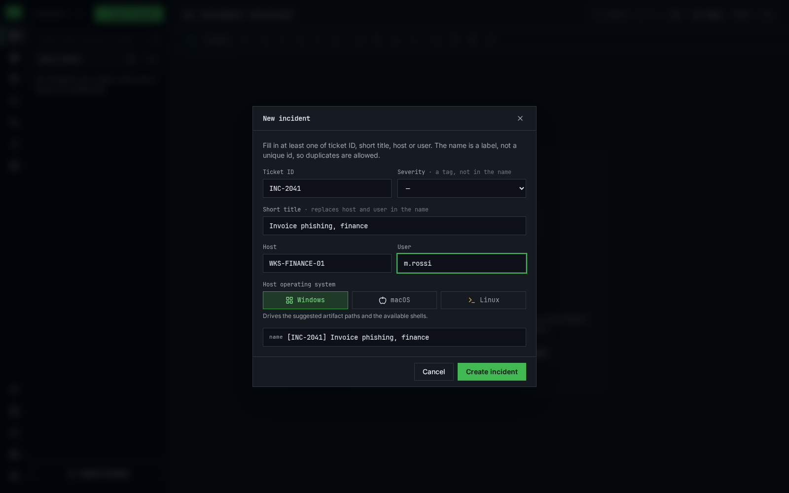
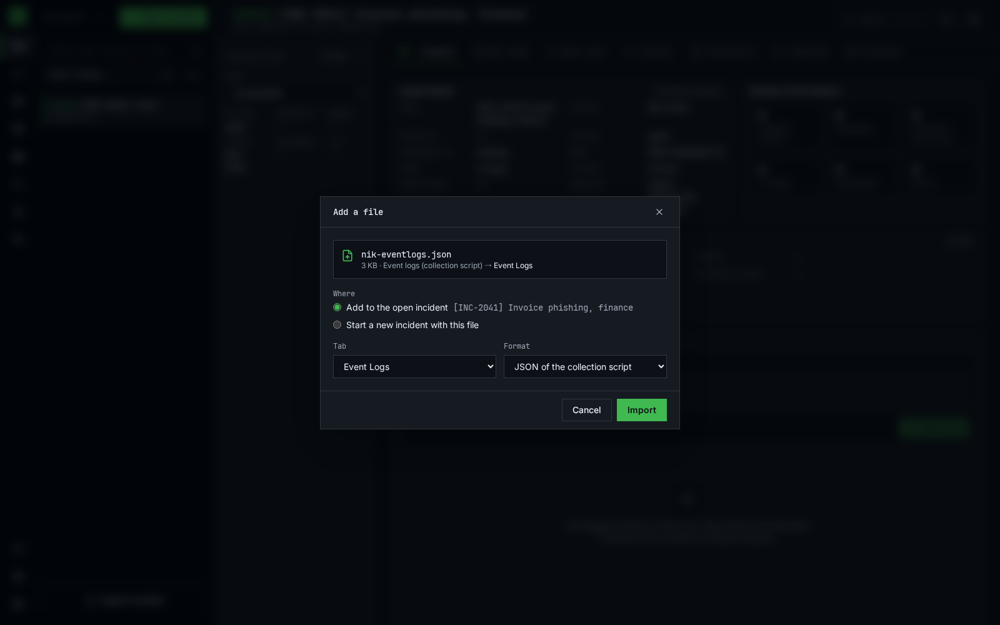
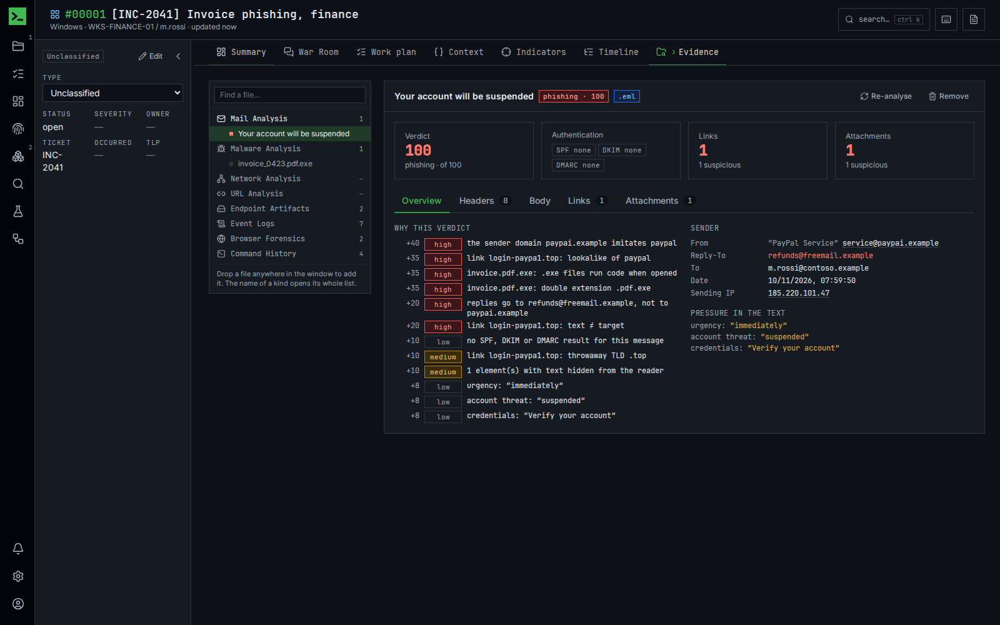
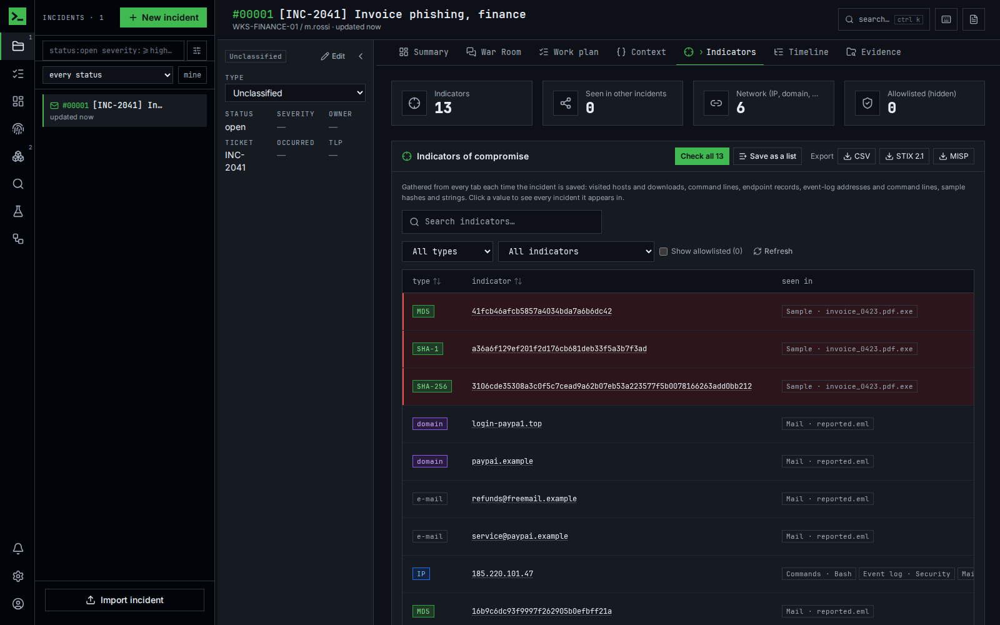
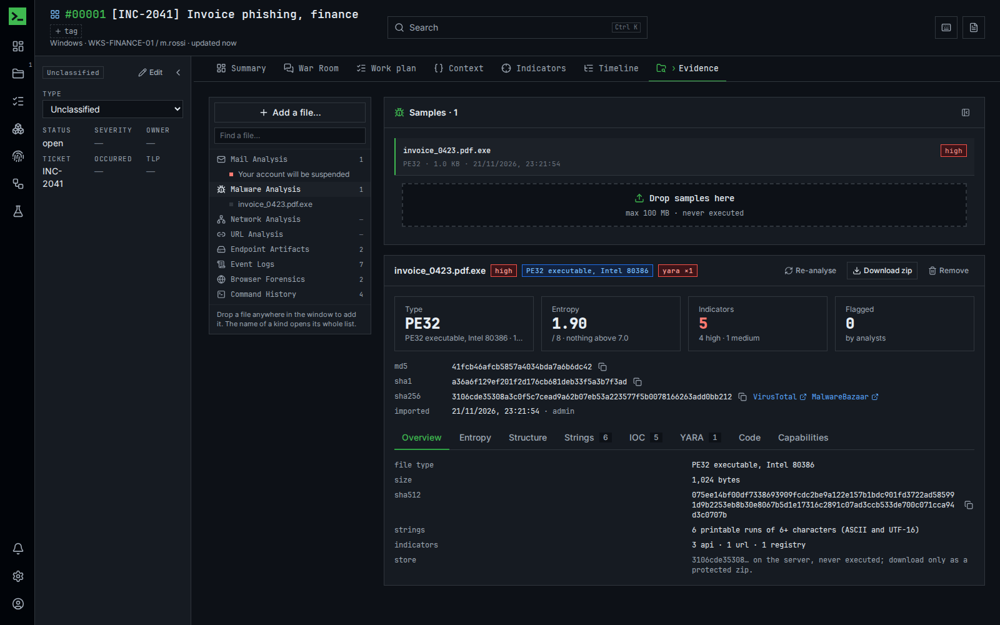
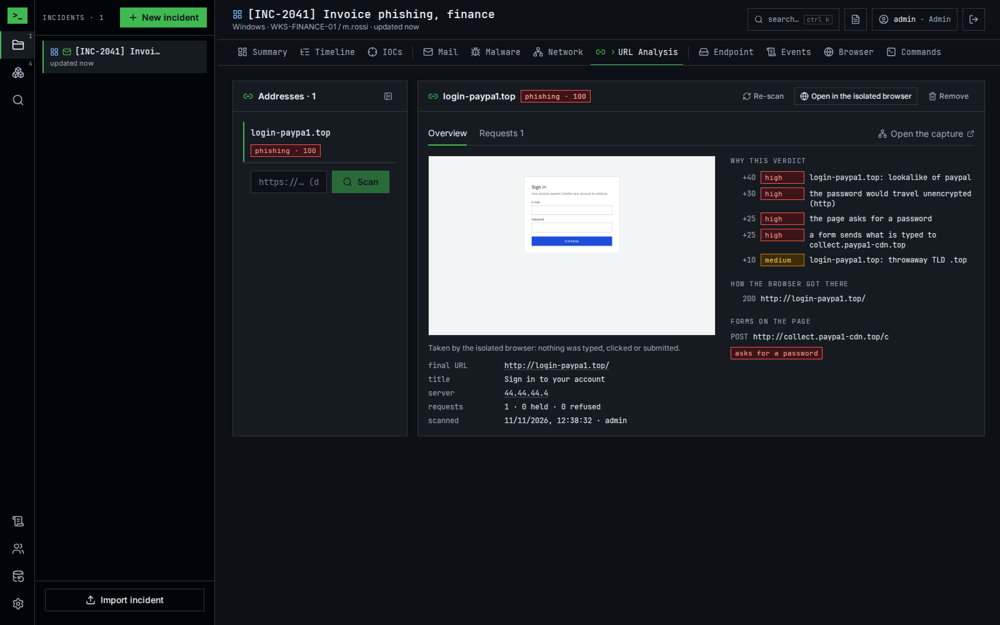
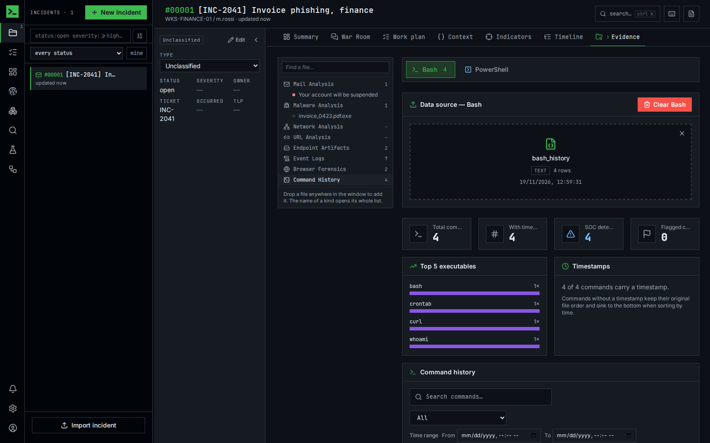

User guide
How an analyst works in Nik, from the first sign-in to the report: open an incident, bring in the evidence, read it tab by tab, flag what matters and share the result.
Sign in
On a new installation the first screen asks for an account: the first one created becomes the admin. Everyone else gets an account from the admin (Settings → Accounts), with the roles their work needs. Every action is recorded under the account's name in the audit log.

An account that has a second factor signs in in two steps: the password, then the six-digit code its authenticator app shows at that moment. The link Use a recovery code instead takes one of the recovery codes in its place, for the day the phone is not there. An administrator who must have a second factor (an admin can require it of administrators) and has none yet is taken to the set-up right after the password, before the app opens.
Wrong passwords and wrong codes cost time: after five in a row the next attempt waits thirty seconds, then twice as long after each further failure, up to fifteen minutes. The page says how long. Nothing is locked for good, and the count goes back to nothing with a good sign-in.
A session ends when nothing was done in it for a while, and in any case some hours after the sign-in. A minute before, Nik says so and offers Stay signed in. When a session does end, what is on screen stays: a dialog asks for the password (and the code) again, and what was not saved yet is saved then.
A server that is one of a pair of hosts can show a sentence in the place of the sign-in, such as This server is the standby: When a server does not serve says what each one means.
Incidents
An incident is one case: one machine or one user under investigation, and everything found about it. The list of incidents is the page Nik opens on: every incident is a row of it, the last one changed first; a double click on a row opens the incident.
- Click New incident at the top of the list of incidents.
- Fill in what you know: the ticket ID from your tracker, a short title, the host and the user. At least one is needed. Pick the severity (a tag, never part of the name) and, when the incident is about a machine, the host's operating system, which decides the artifact paths, shells and collection scripts Nik suggests. The system is optional: left out, the pages that depend on it ask for it the first time they are opened.
- Click Create incident: the incident opens on its Summary tab.
The name is built from the fields: the ticket in square brackets, then the title, or
host - user when there is no title, for example [INC-2041] Invoice phishing, finance.
Everything stays editable: Edit the incident, in the details of the Summary, opens the form.
Every incident also has a number, written before its name: #00042. Nik gives it
when the incident is created, in order, and never gives it to another one. It is how an incident is referred to:
type #42 in Search (Ctrl+K) to open it, write number:42 in a
query, or put it in the address (/incident/42). The ticket of your tracker stays a field of its
own.
Every incident has a status (open, in progress or closed) and can be assigned to an analyst. Set them in Edit the incident, or right-click an incident in the list: Mark as in progress, Mark as closed, Assign to me. The list shows the status and the owner in columns of their own, and is filtered by status, by owner, or by any query. Both are stated in the report.
Tags
An incident carries tags: short words that say what it belongs to (a campaign, a customer, a kind of case) and that the list is filtered by. They are chips under the name of the incident, at the top of its page, and in the list and its quick view. Whoever may change incidents changes them where they are read: + opens an input that offers the tags the other incidents carry; Enter adds what is typed, or the tag chosen with the arrows; Backspace in the empty input takes the last tag off, the × of a chip takes that one off, Esc closes the input. Each change is saved at once and is written to the audit log like any change of a field. A read-only account sees the chips and nothing else.
A tag is the same thing on an incident, on an indicator and on an
artifact: lower case (Phish is kept as phish, and found by
either), a letter or a digit, then letters, digits and . _ : -, 40 characters at most. A
# in front is dropped and the spaces inside become - (data leak is
data-leak). A tag is once on an incident, and an incident holds twelve at most. The tags are the
field that was called Labels until 6.4: it is still named labels in the types, the
mappers, the playbooks and the API, and what an incident held there stays as it was written until somebody takes
it off.
The list of incidents
The Incidents entry of the rail opens the list: a table that takes the whole area next to the rail, with the number, the title, the tags, the type, the severity, the status, the owner and the dates of each incident (a cell shows the tags it has room for, then +2 for the others). A click on the heading of a column orders the list by it, a second click turns the order round. The number at the top says how many incidents are listed, and of how many when a filter is on. New incident and Import incident are at the top; a right-click on a row has what is done to an incident without opening it (its report, its export, its link, a playbook to run on it, Add a tag…, its status and its owner, deleting it). The entry of the rail always leads here, also from an open incident; the browser's Back returns to the incident you came from.
- The quick view. One click on a row opens a panel over the right side of the page, without moving the table: the number, the type and the title of the incident, its severity, its status and the SLA timer nearest to its time, its tags (changed there as on the page of the incident), then what the type of the incident chose to show there (see Settings → Types). A type that chose nothing shows the details of the incident, its first section of fields, the numbers of its evidence and the last three lines of its War Room. With the panel open, ↑ and ↓ go to the row above and below and the panel follows; Esc or its × closes it. At its foot: Open the incident, Assign to me and Close…, each for who may do it. A double click on a row, or Enter on it, opens the incident at once. The panel is resized like every side panel.
-
The query, and the chips that write it. The box above the table takes a
query; the list follows as you type. Under it, Add: Type,
Severity, Status, Owner and Opened each
open a short menu and write their condition into the query, in place of the one it had on that field; a chip
whose field the query has a condition on shows it, and its menu takes it out again. Tag lists
the tags the incidents carry, the most used first, with how many incidents carry each, and writes
tag:<value>. It holds one condition for each tag chosen, not one in all: several tags keep the incidents that carry all of them, as every condition of a query narrows it (writetag:a or tag:bfor either). A click on a tag, in a row or in the quick view, adds it the same way. Field… does the same for any other field, with an operator and a value. - Saved filters. Save the filter… keeps the query on screen under a name, with the order of the rows and the columns; with one of your filters chosen, it can be saved over it instead. The button Filter: … lists yours under Mine and those an administrator shared under Shared with everyone; choosing one puts what it keeps on screen, and All incidents (no filter) takes it away. When the screen is no longer what the chosen filter keeps, changed since saved says so and Back to the saved one undoes it. Set as default, beside a filter, makes it the one the list opens with for you (one at most; set it on All incidents to have none). Manage the filters… renames and deletes yours; an administrator shares one of theirs with everyone there, and takes back any that is shared. A shared filter of someone else is used, not changed: save it under a name of your own to make it yours. A filter never shows anyone an incident their roles do not let them read.
- The columns. Columns… lists the columns there are: those of the list (host, user, ticket, system and source beside the ones shown at first) and every field of the registry (Settings → All fields) that applies to incidents. Tick the ones to show and move them up and down; the table follows at once. The choice is remembered in your browser, a saved filter keeps the columns it was saved with, and Back to the default columns undoes it.
Saving, and working on the same incident
There is no Save button: every change is saved as you make it. Several analysts can work on one incident at the same time. When a colleague saved something meanwhile, Nik reads their version and puts your change on top of it, so a note or a flag added by one never erases the other's; their changes appear in your window when you save, and when you come back to it.
- If a change cannot be saved (the server is unreachable), a red bar says Changes not saved yet. Nik keeps trying on its own; Retry now tries at once. Nothing is lost while the window stays open, and closing it with unsaved changes asks first.
- If your session expires while you work, a dialog asks for your password again. The screen stays as it is, and what was not saved yet is saved as soon as you sign in.

The screen
The narrow column of icons on the left edge is the rail. From the top: the dashboards, the incidents, your tasks, the artifacts (the files, e-mails and captures analysed so far), the Indicators, the automations and the playground (a command outside any incident). At the foot of the rail are the notifications, the settings and your account, which says who is signed in, opens My account and signs out. The audit log, the accounts and the backup are sections of Settings. An entry is there for the accounts whose roles let them use it.
An entry of the rail always shows the first screen of its section, from wherever you press it: Dashboards shows the dashboard you chose for sign-in (or the first), also from another dashboard or from one you are editing; Incidents shows their list, also from an open incident; My tasks shows the tasks that wait for you; Automations shows the playbooks, also from the editor, a run or a script; Settings shows its first section. Pressed on that first screen, an entry does nothing: it never closes what it opened. Going there is a move like any other, so the browser's Back returns to where you were. A page that takes the whole area (Dashboards, My tasks, Automations, the Playground, Settings) has a close button of its own at its top right, which goes back to what was open before it.
Artifacts opens a page of their own (/artifacts): the list of every artifact at
the side, with its filter, and beside it nothing open until you choose one: the sleeping skull, and
No artifact selected. Choose an artifact in the list and it opens there; its Close (the × at
the end of its buttons), the entry pressed again, or the browser's Back, and you are at the list with none open.
Close always leads here, also for an artifact opened from inside an incident: Back returns to the artifact, and
from there to the incident. An artifact that is deleted while it is open leaves this page in its place. The
incident you were on is not shown under this page: it is where Back takes you. On this page the list is what
there is to choose from, so it has no button to hide it.
The Indicators come with a list in a side panel too: their entry shows the page on every indicator, with the panel. The small button at the top right of a side panel (Hide the indicators panel, and Hide the artifacts panel beside an open artifact) hides it and gives the whole width to the analysis; it stays hidden until you press its entry of the rail again.
What is on its way says so, always in the same way. A file going up or coming down whose size
is known shows a bar with how much of it has passed; anything else that takes a moment (a report being built, an
export being prepared, a pack being read) shows the small skull that blinks, (o.o), with a sentence
that says what is happening, in the button that started it or beside it. A transfer started from a menu, or by
dropping a file anywhere, has no place of its own on the screen: it is shown at the foot of the window until it
ends. An empty list shows the sleeping skull with what would fill it, and other words when it is a search or a
filter that left nothing.
The search bar is in the middle of the header, on every screen: press it, or Ctrl+K, and the search opens. On a narrow window the bar shrinks to its magnifier before anything else in the header gives way.
Nothing you have not saved is lost without asking. While a form, an editor or a dialog holds changes that are not saved (a section of Settings, the form of an instance, a dashboard being edited, the settings of a playbook, a rule, a list, a note or a comment being written, a dialog you typed in), whatever would take you away from it asks first: an entry of the rail, another tab, another incident, a link, the browser's Back and Forward, the close button of a dialog, Esc, a click outside it, another item of the same list, signing out. The question names what is not saved and offers Stay (also Esc), Leave without saving, and Save and leave where what you were editing can be saved from there; if saving fails you stay, and the reason is shown. A form you opened and did not touch never asks, and neither does one you put back as it was. What saves itself as you go (the canvas of a playbook, the code of a script, the options of the report, the tags) is never asked about. Closing or reloading the browser's tab while something is not saved makes the browser ask. If your session ends, sign in again in the dialog that appears: the forms stay open under it as you left them.
Every side panel can be resized: the lists of the rail, the quick view of the incident list, the sections of Settings, the facts of an incident, the entry open in the War Room, the node library and the inspector of a playbook, the steps of a run, the list of dashboards. Drag the edge the panel shares with the page, or focus it with Tab and use the arrow keys (Shift for a larger step, Home and End for the narrowest and the widest). A double-click, or Enter, puts the width back. Each panel remembers its width in your browser.
An open incident has a column of its own beside the tabs: its type and its key facts (status, severity, owner, ticket, when it occurred, TLP, or whatever its type puts there). It stays while the tabs change. Edit opens a form for those fields; the select changes the type of the incident, which keeps every value it holds: what the new type does not show is hidden, not lost. The arrow folds the column away, which a wide tab wants, and Nik remembers it; in a narrow window the column is a band above the tabs. The type of an incident also decides the page of its Summary, the order of its tabs and which are hidden; the tab you last opened is remembered for each type.
When the window is narrow the tab bar shortens its labels, then shows icons only; the open tab always shows its full name, and the others show theirs on hover.
Add evidence
There are two ways to bring a file into Nik:
-
Drop it anywhere on the app. Nik reads the file's name and first bytes and proposes the tab
and the source: a Chrome
Historygoes to Browser Forensics, a.bash_historyto Command History, an.emlto Mail Analysis, an executable to Malware Analysis, a.pcapngto Network Analysis. Check the proposal, change it if needed, then choose where it goes: the open incident, a new incident, or, for e-mails, suspicious files and captures, an analysis on its own with no incident. - Use the Data sources card of a tab, which also tells you where the file lives on the host and, for endpoint artifacts and event logs, gives a native script that collects it.
Browser databases, plists, shell histories and tool exports are parsed in your browser: the raw
file never leaves your machine, only the entries reach the server. Windows .evtx logs, e-mails,
malware samples and packet captures are sent to the Nik server, which analyses them without ever running them.

Analyse without an incident
Not everything starts as a case. To check a reported e-mail, a suspicious file, a capture or a link, click New analysis in the artifacts panel (or drop the file anywhere and choose Start analysis). The result is an artifact: it has the same analysis views as in an incident and the whole team sees it in the artifacts panel, with who added it and its verdict. Host evidence (browser and shell history, endpoint artifacts, event logs) always belongs to an incident.

On the artifact's page you can:
- Link to incident: the artifact appears in that incident's tab, indicators, timeline and report. A file or an e-mail can be in several incidents, a capture in one. Removing it from an incident keeps the artifact.
- New incident from this: create the incident and link the artifact in one step.
-
Analyse as an e-mail, Analyse as a capture: on a file that is a message
(
.eml,.msg) or a packet capture (.pcap,.pcapng), as a connector downloaded it, an archive held it or a message carried it. The e-mail or the capture an upload of the same file would have made is made from it and opens, with the analysis of its kind; it goes to the incidents the file is in (a capture to the one incident, when there is just one). The file stays as it is, and each shows the other under Related. The button is there only when the first bytes of the file say it fits; the menu of a file in the Artifacts panel offers the same by its name. - Tags: free labels (a campaign, a malware family, a customer) that the panel's filter and the list show.
- Related: where it comes from and what was taken out of it, for example the e-mail an attachment was sent from, or the files extracted from a capture.
- Delete: the file, its analyses and its reference in every incident.
- Kept: an artifact is kept until someone deletes it, unless it is given a date. Set an expiry… offers 30 days, 90 days, a year or a date; Never takes the date away. On that day Nik deletes the artifact as Delete would, and says so in the audit log. One thing stops it: an incident that is not closed and still references the artifact. Then the date is put off by a week, and the artifact says why. For a mailbox, the file and its index go; the e-mails imported from it stay.
A file that was already analysed is recognised before the upload: Nik shows who added it and in which incidents it is, and opens the existing analysis.

Mailboxes (mbox, Maildir, PST)
A file of many e-mails is an artifact of its own. Drop an mbox, an Outlook
PST, or a zip or tar archive of a Maildir (Nik looks inside the archive for
its cur and new folders: any other archive stays a file to analyse; when in doubt,
name it with "maildir" or "mailbox", so that it is not taken for a file to analyse). Nik stores it and reads its
index: how many messages and conversations, the dates they span, the main senders. Nothing is analysed yet.
While a large one is being read, the page says how far it is: Converting… 41 % for a PST or a Maildir
archive, then Indexing… 41 % · 7,400 messages.
Import messages asks what to take: dates, a sender or a domain, words of the subject, only with
attachments, and whether to take the whole conversation of each match. It says how many that is before starting;
at most 500 at a time, the newest first; when more match, the page says how many were left for later and
Import the next 500 goes on with them. Each message becomes an e-mail artifact with its
verdict, exactly as if you had dropped its .eml. The file stays on the server:
Import more
takes others later.
The page then shows the graph of conversations, drawn like a source-control tree: a row per message, newest first, each joined to the message it answers. A colour is a conversation; two lines leaving the same message are two answers, or an answer and a forward. A hollow node is a message of the file that was not imported: select it and Import this message. Selecting a row shows the message below, with what it answers; Open the e-mail opens its analysis, and Show only this conversation narrows the graph to one thread, to see where a phishing mail came in and who it reached. Whole file lists every message, imported or not.
Put in an incident sends every imported message to an incident's Evidence, under Mail Analysis; tick rows first to send only those. Only the phishing and suspicious messages of a mailbox add indicators: the rest is ordinary mail. Deleting the mailbox removes the file and its index; the e-mails imported from it stay.
Indicators and artifacts
The same thing is seen two ways. An indicator is a value (an address, a domain, a hash) and what the sources say about it: its Reputation. An artifact is what Nik saw when it analysed something itself (a file, an e-mail, a capture, an address visited by the isolated browser): its Analysis. Each leads to the other:
-
Right-click a URL anywhere: Analyse URL has the isolated browser visit it (a domain
is visited as
https://<domain>/). If Nik analysed it already, the menu says Open the analysis with its verdict, and Scan again. The same for a hash of a file or an e-mail Nik holds. Nothing is visited without the click. - The indicator's page has Analysed by Nik: verdict, screenshot and findings of the analysis, or the offer to analyse an address. Nik's analysis is also one of the sources of the reputation, with the highest weight, when it flags the value; a clean scan is no judgement.
- The artifact's page has As an indicator: its value, its reputation and Check reputation.
- Seen in links each source to the artifact it comes from, and lists the artifacts analysed on their own that hold the value.
Paste or drag text
Press Ctrl+V anywhere outside a text field, or drag selected text onto the app. When the text is something Nik can act on, a small panel offers what to do; nothing is opened until you choose.
-
An address (with
http://,https://or a path): Analyse URL scans it with the isolated browser. - A hash, an IP address, a domain or an e-mail address: Search in Nik opens the search on it, Where else was this seen? opens its page: the reputation and the incidents that hold it. A domain can also be visited (Analyse as URL); a SHA-256 of a file already analysed opens that analysis.
Defanged text is read as it was meant: hxxps://evil[.]top/x, 185.220.101[.]47,
user[at]evil.top. A file copied to the clipboard is handled like a dropped file. Sentences and
longer text are ignored.

The Indicators page
The Indicators entry of the rail opens the library: one table of every indicator Nik knows, whether an incident holds it, an analyst added it or it came from a file. The side panel has quick filters (added by hand, malicious, never checked, expired), the alerts and the lists; the table filters by text, type, verdict and origin, and sorts by any column. A row is tinted by its verdict only. Click a value for the indicator's page.
Add one or many
Add opens one box for one indicator or thousands: type, paste, or choose a file. Defanged
values (hxxps://evil[.]example) are read as they are meant and the type is recognised by itself.
Plain text, CSV with a value column, a STIX 2.1 bundle, a MISP event and Nik's own JSON are
understood. Before anything is saved Nik says what it found: new, already in the library, repeated, private or
allowlisted (saved, never sent out) and not recognised. You do not need the dialog to start: drop a file of
indicators anywhere, or paste or drag several values as text, and it opens with them.
Each indicator is saved on its own. Group them in a list? is a question, answered "no" unless you choose a list or name a new one. Tags, a TLP and an expiry date can be set for all of them; an indicator past its date is marked expired and left out of exports and feeds. An indicator the library already has is kept as it is, and joins the list too.
Lists
A list is a named group with its own page and address (/iocs/lists/<id>). The same indicator
can be in several lists; Take out of the list leaves it in the library. Remove takes
an indicator out of the library and of every list, except one an incident still holds, which stays as part of
that incident. A list is removed by its author or an admin; its indicators stay.
Watch this list raises an alert when an incident comes to hold one of its indicators: it shows
under Alerts in the panel (a red dot on the rail), in the audit log, and goes to the
ioc.watch_hit webhook. Feed gives the address a firewall, a SIEM or a SOAR polls
for the list as it is now, signed with an API key.
A list keeps the history of its checks. Each time the whole list is checked (with Check on its page, or by the playbook that checks the watched lists again every week), the page says what that check changed: since the last check: 4 became malicious, 1 cleared. Opened, the line shows the indicators whose verdict changed, with what each was and is, and the last checks of the list with how many indicators it had and how many of each verdict. In the table, a row the last check changed says so under its verdict. A check of a selection, or of a filter, is not a check of the list and writes nothing here.
Analysed or not
The Analysis column shows what Nik saw when it analysed the value itself, and opens it. Indicators of artifacts not linked to any incident are in the library too (origin artifact). Addresses to analyse, in the panel, lists the URLs and domains Nik has not visited yet; select some and choose Analyse addresses: Nik shows what would be visited and what is left out (analysed already, allowlisted, internal, TLP:RED), and visits at most 20, one after the other, once you confirm. A visit is seen by the site.
Bulk check and export
Tick rows (or select all of a filter), or use the buttons of a list or of the whole view. Check first shows what it costs: how many indicators are asked, how many answers are still fresh, how many are never sent out, and per source how many requests against what is left of today's quota. The check then runs in the background, with its progress at the top of the library. When a source's quota is used up Nik says so and goes on by itself when it resets; Stop ends it. Indicators the data guard holds (below) are counted apart before the check starts and are not asked about; the check says how many when it ends, and in the table their verdict reads held.
Export asks for the format (CSV, JSON, STIX 2.1, MISP, or one value per line) and the fields. Only the main ones are ticked at first; the choice is remembered and the first rows are previewed. Values can be defanged; allowlisted and expired indicators are left out unless you include them. The JSON export imports back into Nik with its tags and lists.
Tag…, on a selection (or on everything a filter keeps, 5 000 indicators at most), adds tags to all of them and takes tags off all of them in one go. An indicator keeps the tags that are not named; one seen only in incidents gets a record to hold them, as when it is edited alone.
The tabs of an incident
An incident has seven tabs:
| Tab | What it holds |
|---|---|
| Summary | The page its type arranges: the details, the fields, the numbers, flags and notes. |
| War Room | Everything said and done on the incident, and its command line (Automation). |
| Work plan | Its tasks, what its playbooks do step by step, and their runs. |
| Context | What playbooks read of the incident (Automation). |
| Indicators | Every indicator found in its evidence. |
| Timeline | Every timestamped event of its evidence, in order. |
| Evidence | Its files and what was collected on the machine, each in the page of its kind. |
These are the tabs of an incident that was given no type. A type of incident orders them its own way, hides those it has no use for, and adds pages of its own among them: see The pages of a type.
Evidence
One list at the side holds everything the incident has, kind by kind: the e-mails, the suspicious files, the captures and the addresses, each by its name, and, for what was collected on the machine (endpoint artifacts, event logs, browser history, command history), how many records there are. The box above the list finds a file by its name, its sender or its kind.
- A file opens alone, in the page of its kind: the analysis of an e-mail, of a sample, of a capture, of an address, as described below. Right-click it for its menu.
- The name of a kind opens the whole of that kind: its own list above the file, where files are added, compared and removed, or, for what was collected on the machine, its page.
- Adding is as before: drop a file anywhere in the window (see Add evidence), or use the drop zone of a kind.

Until 5.3 each kind was a tab of its own. Nothing else changed in them: the sections that follow describe each, and a link or a shortcut that led to one of those tabs leads to it inside Evidence.
Summary, Timeline, Indicators
Summary
The first page of an incident is a grid of widgets, arranged for its type as a dashboard is. Out of the box it shows:
- Incident details: the name, ticket, severity, status, owner, host, user, operating system and the suspicious window (start and end of the malicious activity, used to highlight events everywhere). Edit the incident opens the form that changes them; choosing closed there opens the form of closing;
- Numbers of the evidence: counters per source, the flags and the notes;
- the sections of its type, each with its fields and an Edit that opens a form for them;
- Flags and notes: what was flagged and written, in order of time.
Arranging the page. In Settings → Incidents → Types, open a type and choose Pages: the Summary is the page that is selected. It is the grid of the dashboards, on twelve columns: drag a widget by its grip, resize it by its corner, or focus the grip and use the arrow keys (Shift to resize); the others make room. Add a widget offers the kinds: the four above, and Timers (the SLA), Evidence (the files, each a link into the Evidence tab), War Room, Work plan, Indicators, Script buttons, Chart of a dashboard, Linked incidents and A text of your own. The pencil of a widget sets its title and what it shows. What does not fit in a widget scrolls inside it. A type that never arranged its Summary shows the one Nik makes from its sections; Back to the generated page returns to it. In a narrow window the widgets are one under the other, in reading order.

Script buttons
A widget of script buttons holds up to eight buttons, each of which runs a script on the incident. The pencil of the widget opens their settings. For each button you choose:
- its text;
-
the colour of the button and of its text, with the picker or as
#rrggbb. The button is drawn beside them as it will be, with the contrast of the two colours; under 4.5 : 1 a warning says the text is hard to read. It is a warning: the button is saved all the same; - the script, among those that have a saved version;
-
what each argument of the script receives. Leave an argument empty and it is asked when the
button is pressed. Write
{{ sender_address }}and it is filled from that field of the incident: typing{{offers the fields of the type, andincident.number,incident.host,incident.userbeside them. Text can stand around an expression (INC {{ incident.number }}), and the filters of expressions apply.
On the incident the button is drawn with its colours, for whoever may run scripts (the permission to run
playbooks); for the others it is greyed out, and says why. Pressing it opens a dialog that shows every argument:
those filled from the incident, read-only, with the field each comes from, and those to fill. An argument whose
field is empty on this incident is asked like one that was left empty.
A field that holds several values runs the script once for each: the dialog says
3 runs, one for each value, and its button reads Run 3 times. Above fifty runs it says how
many there will be and asks a second time. One argument at most may hold several values; join the values of
another into one text with | join(", ").
The same dialog then lists the runs as they finish: done with the time it took, or failed with show why; Run the failed one again starts only those. Each run is a command in the War Room of the incident, written as it would be typed, with its result under it, and a line of the audit log. The playbook buttons of 5.3 are gone: a page that had some shows none, and a playbook is run from the work plan or from the menu of the incident as before.
A chart of a dashboard, and the linked incidents
Chart of a dashboard shows one widget of a dashboard on the page of
an incident, narrowed to what this incident shares with the others. In its settings choose the dashboard, the
widget, and one field: the query of the widget gets that field with what the incident holds for
it (host:"WS-0231"), so a chart of the incidents by day becomes the incidents on this host by day.
The field is any one the query language knows for what the chart counts, and for
incidents that is every field of the registry, those made in Settings included: with a field
sender_domain, a chart of the incidents by day becomes the incidents from this sender's domain by
day. A field that holds several values (tags, several choices) narrows to the incidents that hold any of them.
An incident that holds nothing for the field shows no chart, and says so: a chart of everything would say
nothing of this incident. The dashboard is read as the person looking: choose one that is shared, or only you
will see its chart.
Linked incidents lists the incidents that have to do with this one, ten at most: first those its field Related incidents names, by id or by number, and those that name it (an incident that came in and was closed as its duplicate); then those that hold indicators this one holds too, the most shared first, with the first of those indicators. Values on the allowlist link nothing. A row opens its incident.
The pages of a type
Settings → Incidents → Types, a type, Pages. On the left, Tabs of the incident lists every tab in the order of this type, each with a tag that says what it is:
- a tab of Nik (War Room, Work plan, Evidence…) can be moved and hidden, not redrawn. Drag it by its grip, or use its arrows; its eye hides it and shows it again;
- the Summary is a page: it is arranged on the right, and is never hidden;
- a page of your own: Add a page… asks its name, which is what its tab is called. It starts empty and is arranged like the Summary, with the same widgets; a widget that is on a page once can be on each page. A page is renamed in its editor and deleted from there. A type has ten at most.
The right side arranges what is selected on the left. Nothing is saved until Save the type; the incidents of the type follow at once: their tabs in the new order, the hidden ones gone, each page a tab.
Under the tabs are the two other views of the type:
- Close form: the sections of the type the Close the incident dialog shows, in the order you give them. The dialog always asks the reason and a note; with a close form it also shows those sections, their fields ready to edit. A field the type marks to close is marked required and holds the closing back while it is empty, as before. A line says how many tasks of the work plan are still open, with Show them: it informs, and stops nothing. A type without a close form closes as it always did;
- Quick view: the blocks of the panel a click on a row of the incident list opens, one under the other in a narrow column, twelve at most: the details, a section of fields, the numbers of the evidence, the timers, the last of the War Room, the linked incidents, a text. A type that chose none shows the details, its first section, the numbers and the last of the War Room.
Timeline
Every timestamped event of every tab in one chronological list: browser visits and downloads, commands, endpoint artifacts, Windows events, samples, e-mails and network captures. Filter by source, by text or by severity; the detection engine marks suspicious events, and events inside the suspicious window stand out.

Indicators
The server extracts the indicators (IP addresses, domains, URLs, e-mail addresses, MD5 / SHA-1 / SHA-256 hashes)
from everything in the incident. Click an indicator to open its window: the overall verdict (a score weighted by
source), one line per threat-intelligence source and, on the right, the tabs and the other incidents that hold
it. A source expands to what it returned (engines, reports, pulses, open ports…), with its whole answer to copy
or download as JSON and how its verdict changed over time. A source is a connector that judges
indicators (VirusTotal, AbuseIPDB, urlscan.io, ThreatFox, URLhaus, MalwareBazaar, OTX, GreyNoise, Shodan, Safe
Browsing, RDAP, or any other whose file marks a command for it), asked through an instance of that connector: a
source whose connector has no instance that is on is listed as off, and when none is installed the
window says so. RDAP gives, for a domain, its registrar, dates, name servers and age as the
registry holds them (a host is looked up as the domain it is under), and for an address its network and holder.
A domain registered in the last 30 days is flagged next to the verdict and counts in the score.
Check now asks every source that is on; an answer older than the retention set in Settings is
asked again by itself. Open as a page gives the indicator a full page, and
Copy link its address (/ioc/<type>?v=<value>) to share with a
colleague. Check all asks the sources about every indicator of the incident, and
Save as a list makes a list of them in the Indicators. A row is red
when the indicator is malicious and amber when it is suspicious; being seen in other incidents is a number, not
a colour. Export the list as CSV, STIX 2.1 or MISP. Indicators that are known good go to the
allowlist (right-click → Add to the allowlist).
When a look-up is held
Two things decide whether a value is sent to the sources. The first never changes: a private address, an internal name, an allowlisted value and a value of a TLP:RED incident are never sent outside, and nothing opens that. The second is the data guard, the same that judges what a playbook sends (Automation → Data): it reads the value, and holds it when it carries
-
an e-mail address: a link such as
https://portal.example.org/reset?user=anna.bianchi@example.org, which tells whoever receives it who was written to; - an internal name or address: a domain under your organisation's own domains, a link on one, or a link with a private address in it;
- an allowlisted name: a link that names a domain or an address of the allowlist, a redirect to your own site for example.
A held indicator says so where its verdict would be: held, the classes it carries, and that an administrator can open them. It is not an error and not a silent "unknown": no source was asked. This applies to Check now, to the checks in bulk and to the automatic look-ups, which leave a held value alone instead of trying it again. Nothing is remembered about being held: the value is read again each time, so it is looked up as soon as its class is opened, or when the allowlist or your own domains change what it is. The answers the sources gave before it was held stay on its page and keep counting in its verdict.
An administrator opens a class in Settings → Threat intelligence, under
What the look-ups may send: each of the three is closed until it is opened, behind a box to tick and
the name of the class to type, and opening and closing are written in the audit log. An opened class goes to
every source that is on. This setting is for the look-ups made outside playbooks only: a look-up a playbook
makes (the node Reputation of an indicator, a !url typed in a War Room) keeps to the
classes opened for that playbook, and neither opens anything for the other.
Making a domain yours. The guard knows your organisation's domains from Settings → Mail analysis → Your organisation's domains, a list (edited under Settings → Lists) that covers the subdomains of each entry. A name under one of them is an internal name: it is held in a look-up and in what a playbook sends. The IOC allowlist is the other list the guard reads: an indicator that is itself on it is never sent, and a longer value that names an entry of it is held as an allowlisted name.

Mail, Malware, Network, URL
These four are kinds of evidence, opened from the list of the Evidence tab. The list of each closes with the button in its corner, and stays closed the next time.
Mail Analysis
Drop the reported e-mail (.eml or Outlook .msg). Nik gives a
verdict and a score with the reasons, and shows:
- Headers: the delivery route, the sender, SPF, DKIM and DMARC checked again by Nik.
- Body: drawn in a sandboxed frame that runs no script, follows no link and submits no form. Remote images stay blocked until you choose Load images; tracking pixels and images hidden in the styles are never loaded.
- Links: each link with its real target; a text that differs from the target is flagged.
- Attachments: type, hashes, hex view, a preview of documents, and Send to Malware Analysis. HTML attachments and links open in the isolated browser, whose traffic is kept as a network capture of the incident.

Malware Analysis
Drop a suspicious file. It is stored on the server under its SHA-256, read-only and never executed, and analysed
statically: hashes, type, entropy per block, structure of PE, ELF and Mach-O
files, strings, indicators, YARA matches,
capabilities (capa, with MITRE ATT&CK) and the Code view (functions, call
graph, control-flow graphs and decompiled code). Download zip gives the file in a
password-protected zip (infected by default) so nothing on the way opens it.

Network Analysis
Drop a .pcap or .pcapng (up to 500 MB). Wireshark's own engine reads it:
- Packets: the packet list with Wireshark's colours, the protocol tree and the bytes. Click a column header to sort the packets loaded so far (again for the reverse, a third time for the capture's order); the Requests and Objects lists sort the same way. Type a display filter in Wireshark's syntax; right-click a field of the protocol tree and choose Apply as filter to filter on it; Follow a TCP, UDP, HTTP or TLS stream; Flag packet adds it to the incident's flagged events. Public addresses, host names, URLs and hashes in the list, in the protocol tree and in a request's details are indicators: click one for its window, right-click for its menu. Private addresses stay plain text.
- Objects: files carried by HTTP, SMB, FTP and others, with their SHA-256, to download in a protected zip or send to Malware Analysis.
- Summary: hosts, DNS queries, HTTP requests, TLS server names, submissions (POST) and beacons (regular connections to the same destination).
Add a TLS key log (SSLKEYLOGFILE) to read HTTPS in clear. Sessions of the isolated browser appear
here too, with a Requests view like the browser's developer tools. The preview of a captured
page is a picture of it: its links, forms and redirects are disarmed.


URL Analysis
Give Nik a link from an e-mail or a chat (defanged text such as hxxps://evil[.]top works): the
isolated browser visits it for you, with network access but never your own network, and types,
clicks and submits nothing. You get:
- a screenshot of the page, its final address, title, server and certificate;
- a verdict with its reasons and points: a domain that imitates a brand, a page that asks for a password, a form that sends what is typed elsewhere, a throwaway top-level domain, a certificate issued days ago, a download the page started;
- how the browser got there: every redirect, shorteners included;
- the requests of the visit, and its capture in Network Analysis (Open the capture);
-
the scripts of the page (the Scripts tab): those it loaded and those written in it,
read as text and never run, each checked against Nik's signatures. The list is sorted worst first; a script
shows what was found (credentials sent to a Telegram bot, a password field read and sent out, a keylogger,
obfuscation, a miner…) with the matching code marked, the indicators in its code, and whether it is a
well-known library. What the scripts do counts in the verdict, and the addresses they talk to join the
incident's indicators. Beautified lays minified code out a line per statement (only white space
changes); Download gives the script in a zip, password
infected.
Re-scan visits the address again; Open in the isolated browser lets you look by hand. An address already scanned is recognised and not visited twice.
The isolated browser window
The page runs in a browser on the server; what you see is a picture of it, and your clicks, typing and scrolling are replayed there. Nothing of the page reaches your workstation.
- Size: the window takes most of the screen and the page is drawn at the size of the space it has, so a large monitor shows a large page. The button at the right of the toolbar switches to full screen; Esc leaves it.
- Tabs: when the page opens another window (the pop-up of a sign-in with Google or Microsoft, a link that opens in a new tab) it appears as a tab above the page and is shown at once. The first page stays open: click a tab to go back to it, the cross to close one. When a pop-up closes itself, as a sign-in window does when it is done, you are back on the page that opened it.
- Network: none unless you allow it when opening. With network the page reaches the internet through the server, never an internal address, whatever redirect it follows; what it submits is held until you choose to send it. Network lists every request.

Endpoint, Event Logs, Browser, Commands
What was collected on the machine: four more kinds of evidence, in the same list.
These four need to know the system. They show the paths and the collection commands of one operating system, and an incident may have been made without one. The first time one of them is opened for such an incident, a dialog asks: Which system is this incident about? Choose Windows, Linux or macOS and Use it: it is saved on the incident, can be changed in Edit the incident, and is not asked again. The dialog is not closed by Esc or by a click outside: Back to the files leaves the kind for the list of evidence, and nothing is saved. Someone who may not change the incident is told so, and can only go back. Until 6.2 these pages showed the paths of Windows for an incident with no system, as if it had been said.
Endpoint Artifacts
Four categories: program execution, persistence, file and folder access and removable devices. Each source (BAM, Run keys, scheduled tasks, LaunchAgents, systemd units, USB history…) says where it lives on the host's operating system and offers a native collection script; import the CSV or JSON the script or your DFIR tool produces.

Event Logs
Upload Windows .evtx files (parsed on the server, including records left after a log clear) or the
JSON of the collection script. About fifty event IDs that matter are kept: logons, process creation, services,
scheduled tasks, accounts, PowerShell, RDP, Defender, Sysmon. The coverage chart shows each
log's span, silences and clears against the suspicious window; logons are paired into sessions; a ruleset flags
log clearing, brute force, RDP outside business hours and more.

Browser Forensics
One sub-tab per browser (Chrome, Firefox, Edge, Brave, Opera, Safari), each with several profiles. Import the history, downloads, bookmarks and omnibox shortcuts as the browser keeps them (SQLite, JSON, plist) or as a CSV/JSON export. Events are classified as visits, searches and redirects.

Command History
One sub-tab per shell (Bash, Zsh, Fish, PowerShell). Import the native history file; commands with a timestamp join the timeline, and the detection engine marks download-and-execute, encoded payloads, reverse shells and other tradecraft.

Addresses from the evidence
An address found in the evidence (a visited page, a bookmark, a download source) is never a live link. The arrow
next to it asks first, shows the address defanged, and offers to copy it that way; only
http and https addresses can be opened at all, and doing so contacts the site from
your workstation. To look at a page without that, scan it from URL Analysis, which opens it in
the isolated browser.
Flags, comments and the right-click menu
A right-click opens Nik's menu on every page, and never the browser's own: on a row or an item, in a text field, on selected text, on a link, and where nothing is under the pointer. On a row or an item the menu is always built the same way, with the parts that apply:
What is not evidence has a menu too: a playbook, a script, a run, a task, a dashboard, an entry of the War Room. It offers what the object does (Open, Run…, Its runs, Open the incident), then Copy link (its address in this Nik, to paste in a ticket or a chat) and what else is worth copying, a name, an id, the entry as JSON. The menu key of the keyboard and Shift+F10 open the same menu on what has the focus.
| Part | What it offers | Where |
|---|---|---|
| The item's own actions | Open, Open as an artifact, Download zip, Scan again… | Samples, e-mails, captures, addresses, artifacts. |
| Flag and comment | Flag (or remove the flag) and Add a comment, which flags the item too. | Events of every table, samples, e-mails, captures, addresses, functions of a sample, packets, indicators. Only inside an incident. |
| Indicator | Where else was this seen?, Search for it, Copy and Copy defanged, and Add to the allowlist. | Any address, domain, IP, hash or e-mail address: the Indicators tab, a sample's indicators and strings, an e-mail's links, a capture's requests, a scan's redirects. |
| Copy | As text, as JSON (the row's fields), or one field: a hash, a name, an address in memory. | Everywhere. |
| Show in the Timeline | Opens the Timeline filtered on the item. | Flaggable items. |
| Remove or delete | Last, after a rule: remove from the incident, delete a note, remove a tag. | Lists, notes, an artifact's chips. |
A flagged sample, e-mail, capture or address shows a small flag in its list. Everything flagged is listed on the Summary tab, where the same menu removes the flag or adds a comment, and goes into the report.
Around what belongs to the row, the menu holds what else is under the pointer, from the innermost thing outward, and it ends the same way on every page:
- Selected text: Copy; when the text is an address or an indicator, also Where else was this seen?, Search for it and Add to the Indicators…, as for text that is pasted.
- A text field (a field of a form, the query box, the editor of a script): Cut, Copy, Paste and Select all, each greyed with its reason when it does not apply (a read-only field copies and selects; a password is not copied). The editor of a script adds Undo and Redo; the query box adds its own helpers, the suggestions and the builder. The first time you choose Paste the browser may ask whether Nik may read the clipboard; if it refuses, Nik says so, and Ctrl + V still pastes.
- A link: Open, Open in a new tab, Copy the address. A link to another site opens in a new tab only. An address found in evidence is not a link in Nik and does not become one here: it keeps its own menu (analyse, copy defanged).
- A cell of a table or a line of text that nothing else claims: Copy this cell, Copy this row or Copy this text, and the entries of an indicator when that is what the cell holds.
- What the page offers: New incident… and Columns… on the list of incidents, New playbook…, New script…, Refresh on the lists that have it.
- Always last: Search…, Keyboard shortcuts, Back and Copy the address of this page.
Shift + right-click is a right-click like any other. One place is not Nik's to answer: the body of an e-mail, a response and the report are previewed in a frame that runs nothing and that the page around it cannot listen to, so a right-click inside the frame is answered by the browser.

Keyboard shortcuts
Two keys do what the menu does, on the row under the pointer (or on the focused row, after moving with Tab): no click is needed, so a long table is triaged with one hand on the mouse and one on the keyboard. They are off while you type in a field and while a dialog is open.
Everything is reachable without a mouse: Tab stops on every row that has a menu, and Shift + F10 (or the menu key) opens the menu of whatever has the focus, a text field included. A dialog takes the focus when it opens, keeps Tab inside, and gives the focus back when it closes; Esc closes the dialog on top and leaves the one under it open. If single keys get in your way (dictation, the keys of an assistive tool), turn them off at the bottom of the shortcut list: the choice is kept in your browser.
| Key | What it does |
|---|---|
| F | Flags the row, or removes its flag. Removing a flag removes its comments too: the notice that follows has an Undo. |
| C | Asks for a comment on the row, which flags it too. |
| Ctrl + K or / | Opens the search. |
| Ctrl + V | Pastes a file, an address or an indicator to analyse it. |
| ? | Lists the shortcuts (also the keyboard button in the header). |
Filter the lists with a query
The list of incidents, the artifacts panel and the Indicators page each have a filter box that takes a
query. Plain words work as they always did (wks-finance,
evil.example); a query says more:
status:open severity:>=high owner:"" open, high or critical, nobody has them
host:wks-* -status:closed created:>=now-7d this week's incidents on the workstations
tag:phish -tag:test status:open the open incidents tagged phish, the tests left out
kind:mail verdict:phishing tag:campaign the phishing e-mails of a campaign
verdict:>=suspicious (type:ip or type:domain) flagged addresses and domains| Write | To find |
|---|---|
field:value |
A name, a host, a note contain the value; a status, a kind, a verdict is the value.
Capitals do not matter. Quote two words: name:"lateral movement".
|
!field:value · - or not |
Not that: !status:closed, -test, not (kind:file or kind:mail).
|
field IN (a, b) · NOT IN |
One of these, none of these: status IN (open, "in progress"),
owner NOT IN (anna, bruno).
|
:>= :> :<= :< · [a TO b]
|
More, less, between: score:>=70, severity:>=high,
created:[2026-11-01 TO today].
|
* · ? |
Any characters, one character: host:srv-*. The value is then matched whole. |
field:"" · field:* |
Empty, or holding something: owner:"" is unassigned, tags:* is tagged. |
or · ( ) |
Conditions side by side must all hold; or is either one; parentheses group:
status:open (severity:high or severity:critical).
|
| Dates |
today, yesterday, now-7d, now-12h,
"7 days ago", 2026-11-10, 2026-11 (the month). Times are UTC.
|
-
It completes as you type. Start a word and the fields of the list are offered, each with what
it is; after the colon come the values a field can take (
status:offers open, in progress, closed). Arrows choose, Enter or Tab takes; Ctrl+Space lists every field. - It is coloured, and says what is wrong: a parenthesis left open, a field that does not exist (did you mean "status"?), a value a field cannot take. The list stays as it was until the query can be read.
- The builder (the sliders button next to the box) shows the same query as rows of field, operator and value, to build one without typing. The text stays what is kept: a query the rows cannot show (one that nests groups, say) is edited as text.
- The filters write the query. The chips of the list of incidents (type, severity, status, owner, opened, tag, any field), mine of the artifacts panel, the type, verdict and origin pickers of the Indicators page add their condition to the box, where you can see it and change it.
Every field of an incident can be asked, the ones you made too. A field made in
Settings → All fields is asked by its name there, and means what its type means on a field Nik always
had: a text contains the value, a choice or a user is the value, a number and a date are compared, tags hold the
value, a yes / no is true or false. The box offers it as you type, with its label
beside it and its choices after the colon; the chips' Field…, the builder and the widgets of a
dashboard (their query, what they are grouped by, the number they measure) list it with the others.
customer:acme amount:>=10000 !region:EMEA a text, a number, a choice made in Settings
sender_domain:* due_back:[2026-11-01 TO *] the field holds something; a date from the 1st on
A table and a JSON field are searched as text: contacts:rossi finds the word anywhere in it, and
that is all that can be asked of them. An indicator field is asked by its value, a timer by the seconds it
counted. A name the language already uses keeps its meaning (number is the number of the incident,
user its account, source the connection that fetched it): a field of yours with such a
name is written field.number, which works for every field you made. A query, a saved filter or a
widget that names a field deleted since says so, by the name of the field.
The fields of incidents Nik always had: name, ticket, host,
user, os, severity, status, owner,
type, hasMail, created, modified, occurred,
closed, tag (its tags: tags and
labels are the same field; a tag is matched whole, and tag: offers the ones in use),
and those of the registry under the names Settings shows (phase, due,
tlp, category, close_reason…). Of artifacts: kind,
name, hash, verdict, score, detail,
size, tags, created, createdBy, linked,
incident. Of indicators: type, value, verdict,
score, origin, incidents, tags, note,
tlp, list, expired, expires, firstSeen,
checked, allowlisted, analysed, addedBy. The same language
is in the API.
Search
Press Ctrl+K (⌘+K on a Mac) anywhere. Type to find incidents,
indicators, samples, events and notes; Enter opens the result. Start with > for actions: go to a
tab, new incident, export, settings, sign out.

Dashboards
Dashboards, on the rail, are pages of widgets: each widget is one question asked of
what Nik holds, and shows the answer as a number, a line, bars, a donut, a list or a table. How many incidents
are open and how serious, how many were opened each day, how long they take to be assigned and closed, which
playbooks fail, which tasks are overdue. The address of a dashboard is its own
(/dashboards/<id>), so it can be bookmarked and sent.
- Reading one. The time range at the top (the last 24 hours, 7, 30 or 90 days, a year, or all time) applies to every widget, unless a widget says it ignores it. A number can show its change against the period before: the same length of time, just earlier. Point at a bar, a slice or a place on a line to read its figures; the button at the top right of a chart shows the same figures as a table. Click a value to see what is behind it: the query that finds those objects, which can be copied, and the first of them (an incident opens from there). The house button makes a dashboard the page that opens when you sign in, in this browser.
- Making one. New starts an empty dashboard of your own; Edit changes one of yours. Add a widget asks for its type, then opens its editor: what it is asked of (incidents, artifacts, indicators, tasks, the audit log, the runs of playbooks and their approvals, each for who may read it), which ones, as a query you write or build, how the answer is grouped (by a field; a date by hour, day, week, month or year) and what is measured: a count, or the mean, median, 90th percentile, sum, least or most of a number or of the time between two dates. The widget is shown beside the form as it will be, with your data. A dashboard can also have one filter for all the widgets of one kind of object (only the incidents of a customer, say), which a widget may ignore.
- Arranging it. While editing, drag a widget by the grip in its corner and resize it by the opposite corner: it snaps to twelve columns, and the others make room. With the grip focused the arrow keys move the widget and Shift with the arrow keys resizes it. On a narrow window the widgets are one under the other, in reading order.
- Whose it is. A dashboard is yours alone until it is shared, which needs the Dashboards role (or an administrator): with everyone, with the holders of some roles, or with some accounts. Whoever sees a shared dashboard sees in each widget only what their own roles let them read: sharing shows the questions, never more of the answers. A dashboard you see and do not own can be duplicated into one of yours; Export saves it as a file that Import takes, here or in another Nik.
- As a document. Report makes a PDF of the dashboard over the time range that is chosen: every widget with its answer, a chart as its table. It holds what you see: a widget your roles do not let you ask says so.
Nik ships four dashboards, seen by everyone and changed by nobody: duplicate one to make it yours.
| Dashboard | What it shows |
|---|---|
| SOC overview | Open incidents by type and severity, new ones per day, SLA breaches, the mean time to assign and the median and 90th percentile of the time to close, who owns what is open, why incidents were closed. |
| Automation (who may run playbooks) | Runs per day by how they ended, failures by playbook, the approvals that wait and how old the oldest is, the tasks that are overdue. |
| Indicators | The Indicators page by verdict, type and origin, what is new per day, the most used tags and lists. |
| Storage and system | How full the file store is and with what (administrators), how each instance that fetches goes (who manages connectors), the incidents fetched by instance, and what is done in Nik per day (who reads the audit log). |
The incident report
The report button in the header opens the report: write the executive summary, choose the sections, the TLP classification and the language (English or Italian), then Preview and download it as PDF or HTML. The organisation's name and logo come from Settings → Report header.
The report holds what you flagged, so it stays about the incident and not about everything that was imported:
- the flagged events, in order, with their comments;
- the indicators flagged by hand;
- the samples, e-mails, captures and scanned addresses that are flagged, or that hold something flagged (an indicator or a function of a sample, a packet of a capture);
- the MITRE ATT&CK techniques of those samples and of the detections on flagged events;
- the event logs that hold a flagged event;
- every note;
- an evidence appendix with the SHA-256 of the imported files that hold something flagged.
Tick Include everything in the dialog for the full inventory instead: every indicator, sample, e-mail, capture and imported file of the incident. The choice is kept per incident.

Export, import and backup
- Export an incident from its row in the list of incidents: a JSON file with everything the incident holds, to archive it or hand it to another Nik. Import incident loads one back; an imported incident starts Unclassified, since its type and its custom fields are those of the Nik it came from.
-
Export artifacts from the artifacts panel (everything the filter lists), from an artifact's
page or from its right-click menu: a zip with the analyses, tags and relations, which another Nik imports. The
original files are live malware, so each export asks: Analyses only (the default, safe to send) or
Analyses and the original files, which puts them in an encrypted zip inside the archive, password
infected. Import (admins) adds the artifacts the server does not have; a file is stored only when its SHA-256 matches its artifact, and nothing is run. A capture comes only with its file, and so does a mailbox: its index says where each message is in that file, so it is exported with it (the dialog says how large the files are) or left out by the Nik that imports. A mailbox arrives with its messages and conversations as they were; which messages had been imported from it does not travel. - Export and import indicators from the Indicators: CSV, JSON, STIX 2.1, MISP or text out; the same formats in, by dropping the file anywhere.
- Export as one file (admins, at the foot of Settings → System → Backup; it was called Full backup before 6.7): incidents, users, settings and the audit log in one file, loaded back from the same place. It does not contain the files: samples, e-mails, captures, mailboxes and their analyses stay on the server, and so do the Indicators page's own indicators and lists, and what automation is made of (playbooks, scripts and connectors travel as files, or as a content pack; instances hold secrets and are never exported). Importing one adds the incidents and the accounts that are not here, and changes or deletes nothing that is. It moves content between two servers; the backup of a server is what Settings → Backup takes by itself.
- Audit log (Settings → System → Audit log): who did what, when, on which incident. It is written by the server as things happen, so it cannot be edited from the app; an admin can clear it, and the new log starts by saying who did.
Automations
The Automations entry of the rail opens the playbooks: drawings of what to do when something
happens, run by Nik step by step. Like Settings it is a page next to the rail with addresses of its own
(/automation/playbooks, /automation/runs, /automation/approvals), and
what was open before is there when you leave it. Automation is its full guide;
what an analyst meets every day is this:
- An approval that waits. When a run asks a person, the question appears above the tabs of the incident it works on, and the rail counts what waits. Approve or Refuse, with a comment if you want: the run goes on by your answer, and your name is on it.
- A run interrupted by a restart. When the server was restarted while a step was changing something in another system (opening a ticket, sending a mail), Nik does not know whether it happened and does not do it twice by guessing. The run waits, with the badge interrupted, and who started it is told by the bell. Its page shows the step, what it was about to send, and three buttons: It happened, go on, It did not, do it again, Stop the run. Look at the other system first. Every step says under Restarts what a restart did to it and when: "Interrupted by a restart at …", "Started again at …". Automations → Runs has interrupted among its statuses.
- Run a playbook… in the right-click menu of an incident, or on its Automation tab, starts one by hand on that incident. The same entry is in the menu of an analysed e-mail, file or address and of an indicator, wherever they are shown, and offers the playbooks made for that kind of object. Tick Dry run to see what it would do without anything being sent or changed.
- An artifact's page lists the playbooks that ran on it, each opening its run.
- An analysis and a restart. A disassembly, capa, a capture, a scan or a mailbox being read when the server or a worker restarts starts again by itself, and says so where its progress is shown: "Interrupted by a restart at 10:02, started again at 10:03 (try 2 of 3)". While it runs the same line says how far the worker is, when the worker tells ("reading the packets (1 of 2)"). One that was interrupted three times is set aside with that reason; the button that started it starts it again. An upload that was cut stays in the tray at the foot of the window with Try again.
- Five playbooks are there from the start, marked shipped with Nik and off: phishing triage, the weekly re-check of the watched lists, a malicious indicator to a block list, an incident to ticketing, the notice of a disk almost full. Automation says what each needs before it is turned on.
- The Work plan tab of an incident lists, under its tasks, the runs that worked on it. A run opens on its own page: the playbook as it went, each node coloured by what happened, with what every step got and gave.
- The War Room tab is the log of the incident: the notes people write, each step a playbook ran on it, the approvals answered, in the order they happened. The chips keep one kind, or what was marked as evidence. Text written at the bottom is a note of the incident, the same the Summary and the report show. Choosing a line opens it beside the stream: a result as a table when it is one, what was sent, what was written to the context, and Mark as evidence. The Timeline is another thing: the forensic timeline of the evidence.
-
The Work plan tab shows what the playbooks of the incident do, step by step: for each
playbook that runs or ran on it, its steps in order under the phases the playbook names (Triage,
Containment…), each with what happened to it. Graph shows the same plan as the drawing of
the playbook, and your choice is remembered. A step that is a task or a question opens it: whoever it is for
fills its form there, and whoever writes incidents can give it to someone else. Add a task adds one
by hand, for the owner of the incident, a user or a role, with a due time if you want one;
/task Call the user @anna due=2hin the War Room does the same. - My tasks, on the rail, is what waits for you across every incident, the most pressing first, with a count on the icon and a dot when something is overdue. A task shows its instructions and its form: a choice when it is a question, the fields of the incident it asks for, a comment. Mark as done (or Send the answer) lets the playbook that waits go on; Skip… gives it up with a reason. A task is for one user, for whoever holds a role, or for the owner of its incident, whoever that is when it is done; All open and Closed list everyone's.
- SLA timers are in the panel beside the tabs when the type of the incident times it: what is left of the time to assign, to contain and to close, or by how much it is over. Whoever works incidents pauses, starts and stops one by hand; a playbook can too.
-
Mirror, in the same panel, keeps the incident in step with a ticket or an issue of another
product: Mirror with… asks for the instance, the id of the object there, and which way.
Read now reads the other side at once and says what changed and what was kept because you set it
here; a note tagged
mirroris sent to the other side as a comment (Mirroring). -
The bell on the rail is what you were told: a task given to you or overdue, an approval that
waits, a colleague who wrote
@youin a War Room, a timer of an incident you own past its time. Opening one goes where it points. An administrator is also told when a worker of the server stops answering (the automation worker, or one of the analysis workers), and again when it is back, with how long it was down: once each, never in between. -
Commands. The same line runs a command when it starts with
!:!ip 185.220.101.47asks what is known of an address,!servicenow-get-incident number=INC0012345reads a ticket./assign @annagives the incident to someone and/closecloses it. The name of a command is completed while you type and its arguments are hinted; a command that changes something outside asks first. Automation has the whole of it. - The Context tab shows what playbooks read of the incident, as a tree to search: its fields, and the files, e-mails, addresses, tickets and hosts known for it. Choosing a value gives the path to write in a playbook, and says who set it: Nik's analysis, a connector, a run.
-
A note written by a playbook is marked automation and signed
nik-automation; the mark opens the run that wrote it.
Building playbooks and scripts needs the Playbooks role; an analyst sees them read-only.
Settings
The gear at the bottom of the rail opens the settings: a page of their own, next to the rail, with the sections on the left in groups and the chosen one at full width. Type in Find a setting to narrow the sections by name or by what they hold (password, restore, domains).
Every section has an address, for example /settings/access/accounts or
/settings/system/audit-log: it can be bookmarked or sent to a colleague, and a reload stays on it.
Escape, the cross, the gear again or the browser's Back leave the page, and what was open before (an incident,
an artifact) is there as it was.
A section is shown to the accounts whose roles let them use it: the ones marked admins to admins, the rule sets to the Rules role, the audit log to the Audit role. A group with no section for you is not shown.
| Section | What it sets |
|---|---|
| Analysis | |
| Detection rules | The suspicious keywords and the built-in command, endpoint and event-log rules. |
| Business hours | The working hours; activity outside them is highlighted. |
| Mail analysis | Your organisation's domains (look-alike senders are flagged, and a name under them is an internal name to the data guard) and the mail servers whose authentication results are trusted (admins). |
| Report header | The organisation's name and logo on the report (admins). |
| Indicators | |
| IOC allowlist | Known-good indicators (addresses, networks, domains) left out of the Indicators tab. |
| Threat intelligence | Which indicator types are looked up automatically, how many days an answer stands per type (30 for IP addresses and URLs, 180 for hashes) and whether an expired one is asked again, and the sources: the connectors that judge indicators, each with what it judges, how much its verdict weighs, whether it is on and through which instance it is asked. A source is on when an instance of its connector is; with several, the oldest that is on is the one asked. Its keys, the requests a key may make a minute and a day, and the answers kept without asking again are set on that instance, under Connectors, not here. A source that needs no key (RDAP, Shodan's InternetDB, urlscan.io and GreyNoise without an account) has a Turn on button that makes its instance. The API keys entered on this page before 6.5 are listed until an instance has them: each moves by itself when the pack of its source is installed (admins). What the look-ups may send lists the classes of data the data guard holds in an indicator (e-mail addresses, internal names and addresses, allowlisted names), each closed until an administrator opens it: see When a look-up is held. |
| Rule sets | |
| YARA rules · capa rules · FLIRT signatures | Your own rules and signatures for Malware Analysis (the Rules role, or an admin). |
| Script signatures | What the scripts of a scanned page are checked against in URL Analysis → Scripts: a regular expression, a severity, and the points it adds to the score of the scan. A signature Nik ships can be turned off, changed and put back as it shipped; your own are added beside them. A pattern is tried on long texts before it is saved, so that it cannot stall a scan, and can be tried on a piece of code first. Changes apply to the scans made from then on: Analyse again on an address reads it with the signatures as they are now (the Rules role, or an admin). |
| Incidents | |
| Types (admins) | The types of incident. A type opens in a builder: the fields of the registry on the left, to add with a click or by dragging; the sections of the Summary on the right, one of which can be the side panel of the incident page; for a field of your own, whether it is required, or required before closing; the reasons an incident of this type is closed with. Under Pages: the order of the tabs of its incidents and which are hidden, the grid of widgets that is their Summary, the pages the type adds, its close form and its quick view (The pages of a type). Seven types ship (Unclassified, the type of every incident that was given none, Phishing, Malware, Network intrusion, Data leak, Access abuse, Vulnerability); they are yours to change. |
| All fields (admins) | Every field an incident can hold, with its name, its type and where it is used. A field has one name for one thing, whoever sets it, so its name and its type never change; its label and its choices do. A field no type lists and no incident holds can be deleted. |
| SLA (admins) | For each type of incident, the minutes its incidents are allowed to be assigned, contained and closed, by severity if you want, counting every hour or business hours only. A timer that is on starts with the incident and is shown beside its tabs; past its time the incident is marked and its owner is told. |
| Content packs (admins) | What Nik is taught, carried from one Nik to another as one file: the packs that are installed with what came from each, a pack file inspected item by item (added, updated with the difference, the same, or in conflict and why) and then imported whole or not at all, and a pack made from items chosen here (Content packs). |
| Pre-processing rules (admins) | What is done with an alert an instance brings in before it becomes an incident: dropped as noise, linked to the open incident it belongs to, closed as a duplicate, or left to a script (Before an item becomes an incident). |
| Lists | |
| Lists (who manages lists) | Every list a feature or a playbook reads by its name: those Nik ships (the IoC allowlist, your organisation's domains, the trusted mail servers, the suspicious keywords, the business hours, the hosts every playbook may reach), yours, and the watch lists of the Indicators page. A list holds values, keys with values, or one document; it is edited here, exported and imported as CSV or JSON, and says where it is used. The section of a feature shows which list it reads (Open in Lists goes to it) and lets another of the same kind be chosen. |
| Automation | |
| Network and data (admins) | The hosts every playbook may reach. What one playbook may reach or send beyond this is chosen on the playbook: see Automation. The server e-mail is sent through is set on an instance of the Mail connector, under Connectors. |
| Connectors (the Connectors role) | The products playbooks can talk to, each a file, with their instances under them: an instance is an address and credentials, turned on and off, with Test. Credentials are stored encrypted and never shown again. The form of an instance has a tab for each of its parts and one Save: its connection, its keys and, for a product that brings alerts in, Fetch (whether it fetches, how often, how far back the first time, the look-back, how it goes, Reset last run, what it fetched), Classifier (which type of incident an alert becomes) and Mappers (how the product's names become Nik's fields, and back). Fetch status and Classifiers and mappers were pages of their own until 6.4. See Automation → Connectors, Fetching and Classifiers and mappers. |
| Credentials (the Connectors role) | Secrets kept once under a name, for the instances of the connectors to use: an API key or a token, or a user name and a password. An instance names a credential instead of holding the value, so the value is changed in one place and is still there when an instance is made again. The value is never shown; the list says where each credential is used. See Automation → Credentials. |
| Stop all (admins) | One switch for every playbook, and whether the worker that runs them is alive. Stopped, nothing starts and no step is taken; runs in progress go on when it is started again. |
| Access | |
| My account | Who you are signed in as, your roles, your password, your second factor and where your account is signed in now. |
| Accounts and roles · API keys | The accounts and their roles, which of them have a second factor, their sessions; keys for scripts and integrations, with roles of their own (admins). |
| Sign-in and sessions (admins) | The sign-in policy: whether administrators must have a second factor, how long a session lives, what failed sign-ins cost, where administrators may sign in from. |
| System | |
| Storage (admins) | How large the disk that holds Nik's files is, how much is free, and what fills the used part: mailboxes, packet captures, files, e-mails, previews, screenshots, the database, and everything else on the disk. The ten largest objects are listed and open their page, where they can be deleted. A warning shows when less than a tenth of the disk is free. With a date lists the artifacts that will be deleted by themselves, the soonest first, and says how many have no date and how much they take. At the top, Encryption of the store: Encrypted and since when, once every file is sealed on the disk. On a server that came from a version before 6.8 it shows the files being encrypted in the background (how many and how much are done, how long is left), with Pause and Go on, the files that could not be encrypted and why, and Check again afterwards. A file found damaged is listed there: it is not served, and comes back from a backup. The line Deleted, kept for recovery appears once something was deleted on a server that archives the log of its database: files that were deleted are kept until no recovery to a moment can go back to them (two days, unless set otherwise), and take their room until then. |
| Keys (admins) | Every secret of the server: whether it comes from a file or from the environment, what it protects, which containers hold it. For the secret key and the store key, the fingerprint (a few characters that are not a part of the key, to check that two people speak of the same one), since when it is in use, and Rotate…: the dialog counts what will be put under the new key, asks for the password again (and a code, with a second factor), then shows the command the operator runs on the server; the row then follows the change until it is verified. The audit key, which signs the entries of the audit log, is on the same list and is changed the same way; its row says whether the server was given one or signs with a key derived from the secret key, how many entries each key signed, and how many cannot be checked because the key that signed them is not among the keys of the server. The backup passphrase is set and changed here too. A value is never shown. When the keys are in the environment the page says so and gives the command that moves them into files. |
| Health (admins) | Whether the server is well, in one place (see Health): disks, queues, workers, backups, the database, the certificate, the audit log. The thresholds, and the token Prometheus reads the same numbers with. |
| Workers (admins) | The processes Nik hands work to: the automation worker (playbooks, fetching, timers) and the analysis workers (analyzer, capa, documents, isolated browser, packet capture, script sandbox). Each says whether it answers, is not answering and for how long, or is not configured on this server. The server checks them every half minute; when one has not answered for two minutes every administrator gets a notification, and one more when it answers again. |
| Backup (admins) | The backups the server takes by itself: their schedule, what is kept, the passphrase, the copy sent to another server, and the list of the backups with the state of each (see Backup). At its foot, the export of content as one file. |
| Audit log | The platform's audit trail (the Audit role, or an admin). At its top, the state of its chain and Verify now; for admins, where it is sent as it is written (see Audit log). |

Health
Settings → System → Health (admins). One row for each thing an operator would otherwise go and look at, in groups: the disks, the database, the queues, the work in progress (what restarts left behind: steps that wait for a person, work that was set aside, work nobody holds), the workers, the backups, the recovery, the certificate, the audit log, the sign-in, the keys and the encryption of the store, the server. A row has a value (62% used, 118 GB free of 320 GB), a state (fine, attention, problem, or not known when it could not be measured), since when it is in that state, what to do when it is not fine, and a link to the page that has the whole story: Storage, Workers, Backup and the audit log are summed up here, not repeated. What is not fine is listed again at the top, the problems first.
- A disk says how fast it fills and when it will be full at that rate, once the server has watched it for a few hours.
- The server looks by itself once a minute. Every administrator gets a notification when a row gets worse and one when it is fine again, nothing in between; the notification leads here.
- Thresholds, at the foot: from which value each row needs attention and from which it is a problem. What is typed and not saved is asked about before leaving the page.
- Metrics for Prometheus: Make a token… shows the scrape token once; the page then says only that one is set and how it ends. How to point Prometheus at it gives the job to copy. The metrics answer to that token and to nobody else, a signed-in administrator included.
The group Recovery is there on a server that archives the log of its database (the Compose stack). Its rows lead to the Backup page, where Recovery to a moment has the whole story; the row of the recovery service leads to Workers. The metrics behind each are in the deployment guide.
| Row | What it says | When it is not fine |
|---|---|---|
Archive volume (disk.archive) |
The disk the archive is on: how full, how fast it fills, when it will be full at that rate. | By the thresholds of the disks. |
Role of this server (recovery.role) |
The server, with the date when it was promoted from standby; Standby; Replaced. | A problem when the server was replaced, and when the second host holds a file that says so and that no key of this server signed (it is not obeyed). Attention when it started without being able to ask the second host whether it was replaced. |
Archive of the log (recovery.archive) |
Last segment 3 minutes ago, On, no segment yet, Stuck or Off, and how many segments wait to be archived when more than one does. | Attention as soon as a segment fails; a problem when PostgreSQL has not been able to archive for five minutes, or does not archive at all. |
Base backups (recovery.base) |
How many are kept, how old and how large the last one is, and the oldest moment one can go back to. None yet before the first. | A problem when the last base backup failed, when there is none a day after the archive started, or when the archive volume has no room for the next. |
Recovery proven (recovery.test) |
To which moment the last recovery test that passed went, and how long ago. Not yet before. | A problem when the last test failed. |
Recovery service (recovery.service) |
Answers or Does not answer. | Attention when it does not answer; a problem after ten minutes. |
Second host (recovery.copies) |
Only when copies are sent: how far behind the second host is, in time and at most in bytes of log, and how many files of the store wait; Not reached; Nothing sent yet; or Nothing is sent: the copies point at this host. | A problem when the second host has not been reached for ten minutes, when what it holds is older than the limit set on the Backup page, or when a promoted server still sends its copies to itself. |
A standby serves no page, so it has no health page: its state is read on its host, with
deploy/standby.sh status.
Audit log
Settings → System → Audit log (the Audit role, or an admin). The log is a chain: each entry carries the hash of the one before it, so an entry that was changed, removed or moved shows when the chain is walked.
- Chain says how far the log was verified and when (Holds up to entry 4182), or where it broke and how (Broken at entry 3120: the content of entry 3120 was changed after it was written). The server walks the chain every few minutes; Verify now walks it at once. Hold it against a head from outside takes the number and the hash of an entry noted elsewhere (the last checkpoint of the syslog receiver): it is what shows that the newest entries were removed, which the chain alone cannot. A box there has every entry read, instead of only what is new.
- Forwarding to syslog (admins) sets where the log is sent as it is written: the receiver, the protocol, for TLS the certificates, how the messages are marked (facility, severity, names), how often a checkpoint goes. The line above the form says where the log goes, how many entries wait and what the last error was. Test sends one marked message to the receiver that is saved and says what the socket said. A change is itself an entry, and the receiver that was set hears of it before it takes effect.
-
An entry marked imported came in a file of content from another server: its time and its
author are what that file said, not something this server saw.
origin:importin a query finds them. One marked written outside was put into the table by something other than the server and linked when the server found it: a restore leaves one such entry, and nothing else should. Nothing removes entries by itself: the log is kept without limit. - Remove the entries… (a signed-in admin) removes what the log holds and leaves one entry in its place: how many were removed, by whom, and the hash of the last, so the chain still verifies. While the log is forwarded, what was not sent yet stays.
Backup
Settings → System → Backup (admins). Nik takes its own backups: the database and every file of the store in one encrypted file, on a schedule. Each one is tested as soon as it is written, by restoring it into a scratch database and comparing everything it holds. What a backup contains and how the server is set up for them is in the deployment guide; this is the screen.
- At the top: the last good backup and when it was verified, the next run, where backups are on this server and how much room is left, and where the copies go. Anything that is wrong is said there in red, in the words of the notice the administrators received.
- The passphrase comes first: no backup is taken until one is set, because none is written in clear. Set the passphrase… asks for it twice. Write it down and keep it away from the server: a restore asks for it again, it is never shown, and nobody can recover it. Changing it later applies to the backups taken from then on; the earlier ones keep theirs.
-
Schedule: on or off; every few hours, every day, or every week on a day; at a time, in a time
zone (
UTC,Europe/Rome). A server starts with a backup every six hours, counted from 02:30 UTC. And the age of the last good backup beyond which the administrators are told. - What is kept: the latest good backups (a number: 8 to start with), one a week for a number of weeks (4), and how many snapshots from before upgrades (3). Under the numbers the page says how much the kept backups take now and how much the numbers in the form lead to, at the size of the last backup: each backup holds the whole store. A backup counts once it has passed its test; the last good one is never removed by the retention. Include SECRET_KEY inside the encrypted backup is off by default; the text under it says what each choice costs.
-
The copy off the server: another server reached over SFTP. Host, port, account, directory,
the private key of the account (or a password; or the name of a
stored credential, written
{{ credentials.name }}), and the host key of that server, which must be written here before anything is sent. Test the destination tries what is saved: it signs in, writes a small file, reads it back and removes it, and shows the key the server presented. - Save the settings saves the three parts together. Leaving the page with something changed asks first, as everywhere.
- Back up now asks the server for a backup at once. The page waits with it: the new row says being written, then being tested, then verified.
- The list: each backup with when it was taken and by whom, its size, where it is (this server, the other one, both), its state and the version of Nik that took it. A snapshot taken before an upgrade is in the list too, named for the upgrade. On a row, or by right-click: Verify now runs its restore test again; How to restore… shows the command to type on the server; the arrow downloads the encrypted file; Delete… asks for its name to be typed, and once more when it is the last good one.
A backup is never put back from this page. It is done on the server, with the stack stopped
(deploy/restore.sh; deploy/rollback.sh for a snapshot taken before an upgrade): see
Restoring.
Recovery to a moment
At the foot of the Backup page (admins). Besides its backups, a server of the Compose stack archives the log of its database as it is written and takes a base backup on a schedule: with the two it can be brought back to any moment since the oldest base backup, and a second host can hold a copy of all of it, ready to take over. This part of the page is where that is watched and set. How it works and what an operator does with it is in the deployment guide. The page reads the server again by itself every half minute, and every few seconds while a base backup or a test is running.
- What is wrong comes first, in red, in the words of the notice the administrators received.
- This server: The server, with the date when it was promoted from standby; or Replaced on … by …, in red. Under it, its generation (1, and one more for each promotion), the name it is known by to the other host, and when the other host was last asked whether it replaced this one.
- Archive of the log: on or off, and Last segment 3 minutes ago, On, no segment yet or Stuck; the name of the last segment archived and when; how many segments wait to be archived; a segment that could not be archived; how often a segment is closed at least (the most that is lost if this host dies before its last segment left it); and whether the recovery service answers.
-
The moments one can go back to: You can go back to any moment from … to …, and under
it the command that goes back to a minute before the last segment, with Copy the command.
Change the moment in it to the one you want. It is run on the server, as the user that runs the stack. It
carries
--replace, because the server it is typed on holds a database: the command asks before it replaces the database and keeps the one that is there aside (Go back to a moment). Nothing on the screen goes back to a moment. - The second host, once a passphrase and a destination are set in the part of the page above (the same ones as for the backups): where the copies go; how far behind it is (Up to date, 40 seconds behind with at most how much log, Not reached since …, Nothing sent yet, or Nothing is sent: the copies point at this server itself on a server that was promoted); the last segment sent and how many in all; the files of the store that wait to be copied and how many were; and whether the link worked at the last try. Without a destination the page says No second host: until then the archive is on this server only.
- Base backups: each with when it was taken (and by whom, when somebody asked), its size, its state (being taken, done, failed with the reason), whether it was checked against its manifest, and its copy (On this server only, Waits to be sent, on the second host since a date, or Not sent with the reason). Take a base backup now asks for one more; the page waits with it.
- Recovery test: Recovery to … proven on … and how long it took, or Not proven yet, and above it the last test when it failed, with the reason. Test the recovery now asks for one at once: the latest base backup and the archive are replayed into a scratch server, to a moment a minute before the last segment archived. The server itself is not touched. The button waits while a test runs, and until there is a base backup.
- Room the archive takes: the log, the base backups, the deleted files kept for recovery, the room left on the volume, and what it all leads to once the archive has run for the days it keeps, at the amount of log a day seen so far.
The settings, saved with Save the recovery settings:
- Base backups: Take base backups on a schedule, on or off; Every day, Every week on a day, or Every few hours (1 to 23); at a time, in a time zone. A server starts with one every day at 03:30 UTC;
- Days one can go back (1 to 60; 2 to start with). The base backups and the log from before those days are removed, and with them the deleted files that were kept for a recovery to those days;
- What is watched: after how many minutes behind the second host the administrators are told (2 to 1440; 15 to start with); every how many hours the archive is proven (1 to 720; 24 to start with); and the name of this server for the other host, which is what the page of a replaced server shows (left empty: the name of the machine).
The notices. Every administrator gets one notification when a problem appears and one when it is solved, nothing in between; each leads to this page. The problems: PostgreSQL has not been able to archive its log for five minutes (it keeps every segment meanwhile, and its disk fills); PostgreSQL does not archive at all; the recovery service does not answer; the last base backup failed, or there is none a day after the archive started; the archive volume has no room for the next base backup; the last recovery test failed; the second host has not been reached for ten minutes; what the second host holds is older than the limit set; this server was promoted and still sends its copies to itself; this server started without being able to ask the second host whether it was replaced.
Promoting a standby is not on this page, nor on any other: it is a command on the host of the
standby (deploy/standby.sh promote). A server without an archive (an installation without
containers) says so here and shows nothing else.
When a server does not serve
A server that is one of a pair can answer with one sentence in the place of the application. The page shows it where the sign-in would be, to anybody; the administrator of the server finds what to do in the deployment guide (A standby host).
- This server is the standby: it follows the first host and serves nothing. It becomes the server when an operator runs deploy/standby.sh promote on this host. Nothing is wrong: use the address of the server.
- This server was replaced on … by …: the standby was promoted and is the server now. It serves nothing, fetches nothing and runs no playbook, so that the two never work at once. What was written here after the last copy reached the other host is not on it. To make this host the standby of the new server: deploy/standby.sh rejoin. Use the address of the server that took over.
- This standby is being promoted: it starts as the server as soon as deploy/standby.sh promote has finished. If that command was interrupted, or the database was promoted by hand, run it again on this host. Wait; if it stays, tell the operator.
- Nik is starting: it asks the second host whether this server was replaced while it was away. It lasts some seconds, three quarters of a minute at most; then the sign-in comes, or the sentence that says the server was replaced.
Accounts
An admin adds an account under Accounts and changes it with the pencil on its row:
- Username: the incidents assigned to the account follow the new name. What it already wrote (notes, flags, audit entries) keeps the name it had.
- Roles: one or more, ticked in the list; see Roles below. Other roles sign the account out everywhere: the person signs in again, with the new ones.
- New password: for someone who forgot theirs. It signs the account out everywhere, and ends the wait its failed sign-ins had earned it.
- Disabled: the account cannot sign in and is signed out at once; everything it did stays. Use it instead of deleting when somebody leaves the team.
There is always at least one admin that can sign in: you cannot take the Admin role away from yourself, disable or delete yourself, nor do so to the last admin. Everyone changes their own password under My account, which ends the account's other sessions.
Each row says what the account has as a second factor: Second factor, No second factor, or Second factor required for an administrator who must have one and has not set it up yet (it is asked to at its next sign-in, and can do nothing else before). Two more buttons on the row, also in its right-click menu:
- Sessions: where the account is signed in now (the browser, the address, since when, last used), with End on each and one button for all. A session that is ended is refused at its next request: the person is asked to sign in again.
- Reset the second factor: for somebody who lost the phone and the recovery codes. The factor and its codes are taken away and the account is signed out; it signs in with its password, is told what happened, and sets a factor up again. Make sure it is them who asks. You cannot reset your own: sign in with a recovery code and turn it off under My account.
Second factor and sessions
Under My account, Set up a second factor… protects your account with a code from an authenticator app (any app that makes six-digit codes that change every thirty seconds), asked after your password at every sign-in. Anybody can set one up; only administrators can be required to. Unless you signed in a moment ago, you are asked for your password first.
- Scan the QR code with the app, or type the secret shown beside it. The code is drawn in your browser; the secret is shown only now.
- Type the code the app shows, and Turn it on. Only then is the second factor on.
- Keep the ten recovery codes that are shown next: Copy or Download them, and store them where your password is not. Each signs you in once when the phone is not there. They are shown once; Nik tells you how many are left each time you use one.
New recovery codes… makes ten new ones and ends the old ones. Turn it off… takes the second factor away. Both, and a change of your password, ask again who you are: your password and a current code (or a recovery code). Turning the second factor on or off signs your account out everywhere else. If you are an administrator and administrators must have one, turning it off leads straight back to setting one up.
If you lost the phone and the codes, an admin resets your second factor from Accounts. Nik does not remember a browser: the code is asked at every sign-in, on purpose, because a copied browser profile is exactly what a second factor is there for.
Sessions, on the same page, lists where your account is signed in now: this browser and the others, with the address each came from, when it began and when it was last used. End closes one at once, End all the others every one but yours. End a session you do not recognise, then change your password.
Sign-in and sessions (admins)
Settings → Sign-in and sessions holds the rules of signing in, in one form with one Save. No second factor is required and no network is listed until it is set here.
- Second factor: one switch, off at first, Administrators must have a second factor. It concerns every account that holds the Admin role and nobody else: other accounts set one up when they choose to. The form says which administrators have none and will be asked. It takes effect at once: such an account, signed in or not, can do nothing but set its second factor up, and what it had on screen stays underneath. If you are one of them, your own set-up opens as soon as you save. API keys are never asked for a code.
- Sessions: after how long without use a session ends, for everybody (eight hours at first) and for administrators (thirty minutes at first), and how long it lasts at most (twelve hours). What the page asks by itself, such as lists that refresh, does not count as use; somebody typing a long note does. A shorter time applies to the sessions that are open.
- Failed sign-ins: after how many failures in a row an attempt waits, how long the first wait is and the longest one, and after how many failures the administrators get a notice (one per run of failures; the audit log has them grouped). Failures are counted per account and per address, wrong codes apart from wrong passwords. The addresses an account last signed in from are not made to wait by somebody else's guesses at its password.
-
Administrators' networks: when networks are listed (
10.20.0.0/16,2001:db8:aa::/48, a single address), accounts and API keys that hold the Admin role are accepted only from them; from elsewhere the sign-in says so, after the password and the code were right, and an open session is refused until it is back on a listed network. The page shows the address the server sees you at. A list that does not hold it is not saved unless you insist, and Nik says what will happen. Where the server cannot know the addresses of its clients, the page says so and why, and the list is refused: see the deployment guide.
Roles
A role is a tag on an account. An account holds one or more, and may do what they grant together: an analyst who also keeps the YARA rules is Analyst + Rules, not an admin. The chips next to each name in Accounts show them; your own are under My account and next to your name in the header.
| Role | What the account can do |
|---|---|
| Viewer | Read incidents, artifacts, indicators and analyses. It changes nothing: the header says read-only, and the buttons that create or import are not shown. |
| Analyst | Read and work: create and edit incidents, upload and analyse, manage indicators, change the detection rules, business hours and allowlist. Run playbooks, stop a run, answer an approval. |
| Playbooks | Build playbooks and scripts, turn a playbook on or off, change its limits. It does not read incidents by itself: give it with Analyst or Viewer. |
| Connectors | Install connectors and add their instances, with the credentials of the other products, typed into an instance or kept once in Credentials. It does not build playbooks by itself: give it with Playbooks to who does both. |
| Rules | Add, change and remove the YARA rules, capa rules, FLIRT signatures and script signatures. |
| Audit | Read the audit log. |
| Admin | Everything, and alone: accounts and their roles, API keys, webhooks, storage, backup, the report header, the mail settings and threat intelligence (what leaves the server), clearing the audit log, and for playbooks: the hosts they may reach, the classes of data they may send, the switch that stops them all. |
An account can hold a single narrow role. With Audit alone it signs in and finds the audit log and its own account, nothing else; with Rules alone, the rule sets. To let an auditor also read the incidents, add Viewer.
Coming from a release before 4.0: every admin is still an admin and every analyst an analyst. One thing changed for analysts: the audit log now needs the Audit role. Add it to the accounts that should still read it.
An API key takes roles in the same way when it is created: Viewer for a key that only reads (a feed for a firewall), Analyst for one that uploads and edits, Admin for backups and accounts. Keys made before 4.0 keep working as they did.